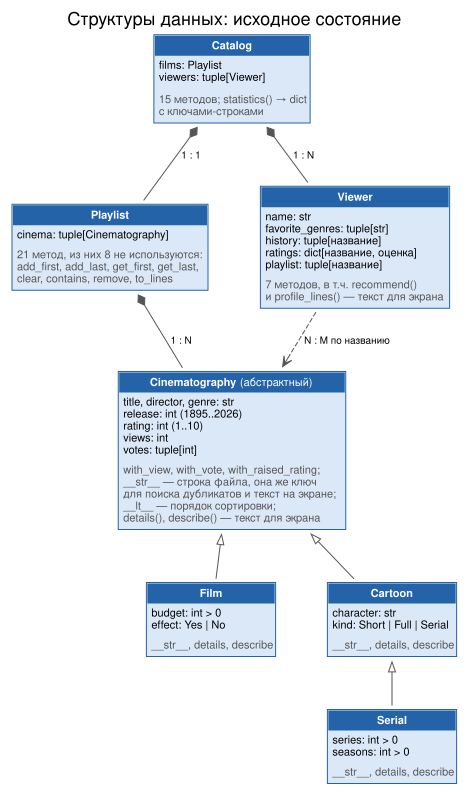
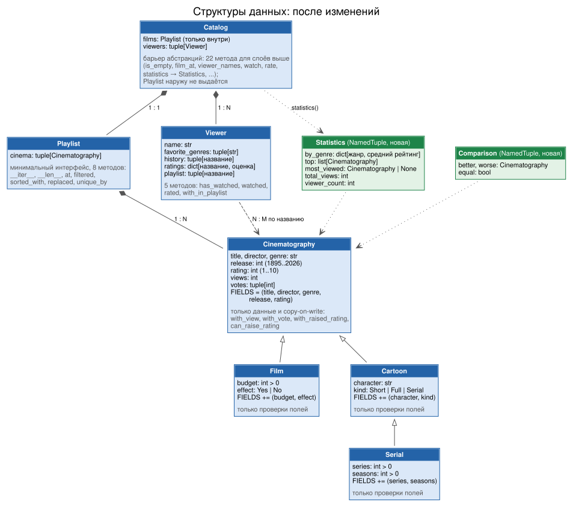

Python, консоль, данные в памяти. Исходное состояние — результат семинара 1: вычисления выделены, данные неизменяемые (copy-on-write)


Cinematography (+ Film, Cartoon, Serial), Playlist, Viewer, CatalogPlaylist: 21 → 8 методов__str__, __lt__, details, describe; вместо них — кортеж полей FIELDSStatistics (NamedTuple), добавлен ComparisonСтроится скриптом diagrams/callgraph.py по исходному коду: 143 функции и метода, 36 конструкций языка, 486 стрелок
Слой — полоса с назначением. Если функции слоя вызывают друг друга, он делится на подуровни (цифры слева), поэтому все стрелки идут вниз.
Учтены неявные вызовы: str(film) → __str__, sorted → __lt__, len и for по плейлисту.
Категория «действие» вычисляется: функция вызывает input, print, файлы — сама или через другие.
Слои совпадают с модулями, а не с уровнями абстракции: 11 слоёв, 29 подуровней
| Слой | Что в нём | Категория |
|---|---|---|
| Цикл меню | main | действие |
| Команды меню | 17 команд, choose_film, check_data | действия |
| Консоль и файлы | success, print_menu, storage | действия |
| Конструкторы | parse_playlist, тестовые данные | вычисления |
| Каталог | 15 методов Catalog | вычисления |
| Зритель и плейлист | 27 методов | вычисления |
| Операции над произведениями | конструкторы, сеттеры, with_* | вычисления |
| calculations.py | 31 функция вперемешку | вычисления |
| Представление произведений | __str__, __lt__, details | вычисления |
| Данные · Язык | поля, исключения · 36 конструкций | данные |
Спорные места
with_* вызывают calculations.py, а calculations.py вызывает __str__ (дубликаты) и __lt__ (сортировка) — пришлось поставить их ниже__str__ отвечает за три вещи: строку файла, ключ дубликатов и строку на экранеcopy_with и recommendationscheck_data — вычисление в слое командViewer.profile_lines, Playlist.numbered_linesЦифры
writer → details, 7 слоёвСначала — нижние слои: из чего строится всё остальное
1. calculations.py разделён по уровнямудобные слои
Функции разного уровня лежали в одном модуле. Теперь у каждого модуля один уровень, и на графе это четыре разных места.
calculations.py # 192 строки, 30 функций ├─ generic.py # не знает о фильмах │ copy_with, find_first, sorted_by, group_by, │ replaced, unique_by, item_at, average ├─ rules.py # на них опираются классы │ is_valid_year, is_valid_rating, │ can_raise_rating, rating_from_votes ├─ queries.py # запросы к спискам произведений │ top_by_rating, recommendations, │ average_rating_by_genre, most_viewed └─ records.py # формат файла
На графе после: слои «Общие операции» и «Правила», queries и records — в «Строительных блоках».
2. Playlist: 21 метод → 9 (→ 8)минимальный интерфейс
Из C# перешли 8 методов, которые никто не вызывал. Остальное выражается через общие операции, а решение (как сортировать, что считать дубликатом) принимает каталог.
# было: add_first, add_last, get_first, get_last, clear, # contains, remove, to_lines, get_all, count, find_all, # sort_by_name, sort_by_rating, sort_with, check_not_empty… class Playlist: def __iter__(self) / __len__(self) def at(self, number): return item_at(self.cinema, number) def filtered(self, predicate): … def sorted_with(self, sorter): … def replaced(self, old, new): return Playlist(replaced(self.cinema, old, new)) def unique_by(self, key): return Playlist(unique_by(self.cinema, key))
Меню знало, что произведения лежат в Playlist, а зрители — в кортеже. Теперь оно работает только через методы каталога
Было: меню лезет внутрь
def check_data(catalog): if catalog is None or len(catalog.films) == 0: raise NoDataUploadedException() film = item_at(films.get_all(), n) if len(catalog.viewers) == 0: … print("Зрители: " + ", ".join( viewer.name for viewer in catalog.viewers)) films = viewer.recommend(catalog.films) playlist = load_playlist(filename) return Catalog(playlist)
Стало: только методы каталога
catalog.check_not_empty() film = catalog.film_at(n) if not catalog.has_viewers(): … console.show(views.viewers_line( catalog.viewer_names())) films = catalog.recommendations_for(viewer) return load_catalog(filename) # storage сам собирает Catalog
is_empty, all_films, film_at, films_of_kind, watch, rate, statistics…Playlist: снаружи плейлист не нужен никомуВ одной функции были и input, и правила сравнения, и разбор типов. Правила опущены на свой уровень — в queries и каталог
Было: команда «Сравнить два фильма»
first = choose_film(catalog.films, "…первого…") … if first is second: raise IdenticalMoviesException() better = better_of(first, second) if better is None: print(f"…одинаковый рейтинг: {first.rating}") else: worse = second if better is first else first print("У фильмов разный рейтинг") print(f"«{better.title}» ({better.rating}) лучше…") # фильтр по типу — таблица классов прямо в меню types = {"film": Film, "cartoon": Cartoon, …} … lambda item: type(item) is types[kind.lower()]
Стало: правило — в queries.py
def compare_films(first, second): if first is second: raise IdenticalMoviesException() better = better_of(first, second) if better is None: return Comparison(first, second, equal=True) return Comparison(better, …, equal=False) KINDS = {"film": Film, "cartoon": Cartoon, "serial": Serial}
catalog.films_of_genre, catalog.films_of_kindStatistics (NamedTuple) вместо stats["by_genre"]without_duplicates() сразу возвращает, сколько удалено: меню не вычитает длиныУ классов произведений остаются только данные и copy-on-write. Текст для экрана и формат файла — отдельно
5. Слой представления views.pyудобные слои
details() и describe() в 4 классах, profile_lines(), все f-строки сообщений из команд → чистые функции «объект → строки».
def film_extra(film): return [f"Бюджет: {film.budget}", f"Живые спецэффекты: {film.effect}"] KIND_VIEWS = { Film: (film_extra, "Это фильм"), Cartoon: (cartoon_extra, "Это мультфильм"), Serial: (serial_extra, "Это мультсериал"), } def film_details(film): extra, description = KIND_VIEWS[type(film)] return common_details(film) + extra(film) + [description]
Команды больше не читают поля: views.watched_message(viewer, film).
6. Формат файла — в records.pyминимальный интерфейс
Четыре __str__ → одна функция по кортежу полей. Дубликаты и сортировка — по ключам предметной области: вычисления больше не зависят от формата файла.
class Film(Cinematography): FIELDS = Cinematography.FIELDS + ("budget", "effect") def to_record(film): # records.py return "|".join([type(film).__name__] + [str(getattr(film, name)) for name in film.FIELDS]) def identity(film): # queries.py return (type(film).__name__,) + tuple( getattr(film, name) for name in film.FIELDS) def by_title_and_year(item): # вместо __lt__ return item.title, item.release
Разбор строк файла тоже переехал из constructors.py в records.py.
399 строк: меню, 17 команд, печать, ввод чисел, журнал ошибок и отмена в одном модуле
| Модуль | Что делает |
|---|---|
main.py | цикл меню, 34 строки |
commands.py | 17 команд: спросить → каталог → показать |
dialogs.py | выбор фильма и зрителя, вопросы, отмена, ошибки |
history.py | версии каталога для отмены (кортеж) |
console.py | единственное место с input и print |
storage.py | файлы и журнал ошибок |
Продолжение по графу
for, len и except RatingException в командах → dialogs.show_cards, show_found, catalog.can_raiserecords.py перестал создавать Catalog: иначе формат файла стоял бы выше каталогаЦикл меню после
def main(): dialogs.greet() catalog, history = Catalog(), () while True: try: choice = dialogs.ask_menu_choice(UNDO) if choice == 0: break if choice == UNDO: catalog, history = dialogs.undo(catalog, history) elif choice in COMMANDS: new_catalog = COMMANDS[choice](catalog) catalog, history = new_catalog, remember(history, catalog, new_catalog) else: dialogs.wrong_menu_item() except EOFError: break except Exception as e: dialogs.report_error(e) dialogs.goodbye()
Все вызовы на одном уровне: диалоги, команды, история. Раньше здесь же были print, history.pop() и запись в журнал.
Слой — уровень абстракции: на одном уровне стоят каталог (предметная область), диалоги и файлы (интерфейс)
Catalog (барьер), dialogs, storage, historyviews, records, console, Playlist, queriesgenericДействия — только в main, commands, dialogs, console, storage. Всё ниже «Операций», кроме консоли, — вычисления.
Оранжевая стрелка одна: цикл меню берёт команду из таблицы по номеру.
Все числа считает callgraph.py по коду — diagrams/callgraph-before.md и callgraph-after.md
| Показатель | До | После |
|---|---|---|
| Слоёв с назначением (с языком) | 11 | 9 |
| Подуровней | 29 | 19 |
| Самая длинная стрелка между функциями, слоёв | 7 | 4 |
| Стрелок между функциями через 3+ слоя | 49 | 16 |
| Функций верхних слоёв, напрямую зависящих от данных и языка | 21 | 1 |
| Обращений к внутренностям каталога и плейлиста извне | 22 | 0 |
| Функций и методов | 143 | 175 |
| — из них действий | 33 | 52 |
| Стрелок | 486 | 501 |
Устранённые длинные стрелки
writer → Cinematography.details — 7 слоёв (изм. 5)compare → better_of — 6 (изм. 4)choose_film → item_at, get_all — 6 (изм. 2, 3)filter_films → genre_matches, find_all — 6 (изм. 3, 4)register_viewer → parse_genres — 6 (изм. 7)__str__, __lt__: вычисление зависело от формата файла (изм. 6)Что осталось
Catalog → copy_with, find_first — общие операции copy-on-writeСлои стали уровнями абстракции: каждый вызывает соседний слой, а не язык через голову
FIELDS, строка в KINDS, KIND_VIEWS, MAKERS — меню не меняетсяrecords.pyinput и print — только в console.pyviews: проверяются без консолиgeneric.py не знает о фильмах — переносится в любой проектconsole.py, history.py — так жеqueries и views работают с любым списком произведений, не только с каталогомЦена: больше модулей (12 → 20 файлов) и мелких функций. Граф и метрики — diagrams/, каждое изменение — отдельный коммит в репозитории.